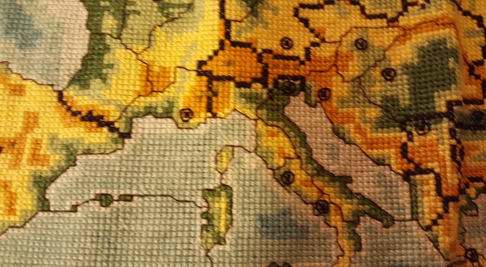
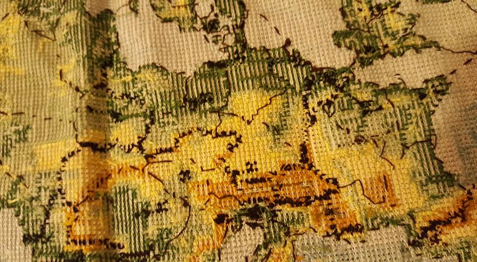
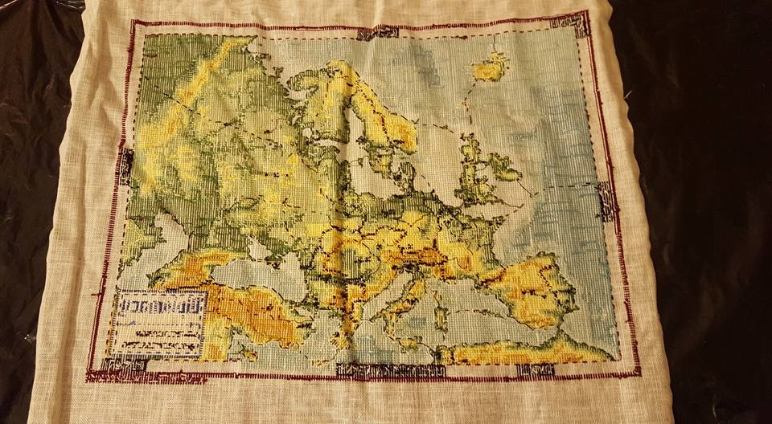

Tapestries are made by many artisans working together. The contributions of separate workers cannot be discerned in the completed work, and the loose and false threads have been covered over. So it is in our picture of a Diplomacy game.- Sheldon L. Glashow
Recently rediscovered in the secret vault of The Peery Diplomacy Archives at Chateau Peerijavo was the seldom seen in public work of art by embroidery artist Claire Brosius, The Allan B. Cahamer Diplomacy Map. Come see Diplomacy's equivalent to The Bayeux Tapestry, The Lady and the Unicorn, or The Valois Tapestries.
If price is no object but uniqueness is then this might be the piece to take a special place on your Diplomacy icon wall.
You’ve done it all. You’ve got it all. There’s only one thing missing --- something unique that only you as a Dipper will have. Well, I have it for you.
For the Dipper who has everything but wants something more, the Calhamer Diplomacy Map may be it.
A dream come true: isn’t that what every Dipper wants? For some it’s the lure of a world or national championship, or even just winning your first game. For others it’s about making new friends and keeping old ones as the years go by. For some the lure of travel to distant places is the lure of the game or hobby. And for a very few it’s the dream of doing something no other hobbyist has done or having something no other player has. That’s my dream. Is it yours?
The first question every Dipper unfamiliar with needlepoint, embroidery and tapestry art is: what is the difference between them?
For many years the words needlepoint, embroidery and tapestry have caused a bit of confusion. The word tapestry was originally applied to a fabric where the pattern was woven into the fabric as it was being made. Embroidery is the ornamentation of a fabric using a needle and thread. For many years now, the word tapestry has also been commonly applied to canvas work. The word embroidery initially had only a small application, but this has been expanded to mean many different fabric ornamentations either using a needle or machine. And, obviously, both are made with a needle.
A tapestry is a picture woven into cloth. It's a decorative rug you hang on the wall, with detailed images or designs on it. Some tapestries, like the famous Unicorn Tapestries, tell stories with their pictures.
Weaving an image into cloth is a brilliant idea — it makes art accessible and portable. And a tapestry offers something a painting can't: warmth. Think of those cold castle walls in medieval Europe, add a tapestry, and you're warmer already. You can use tapestry to describe anything that's multi-layered and complex, like the tapestry of life in a rural town, or the tapestry of your family history, or the tapestry of plot and character in your favorite novel.
Embroidery is the act of decorating a piece of cloth with a stitched design. You may have seen large medieval examples of embroidery hanging on the walls of museums depicting flowers and wild animals and the like.
Embroidery also has a common figurative meaning of something deceptive, or an excessive and unnecessary detail designed to mislead, or simply something vain and foolish (see embellishment). The great American designer Buckminster Fuller summed up this sense of the word nicely: Tombs are the clothes of the dead and a grave is a plain suit; while an expensive monument is one with embroidery.
apestries are done with heavier cloth and thread on a flat or vertical loom. Embroidery is a handicraft done with lighter cloth and thread using a hoop.
For more background see: http://www.visual-arts-cork.com/tapestry-art.htm
Originally embroidery was a handicraft done by noble or royal ladies with too much time on their hands. You’ve all seen pictures of that in movies set in medieval times. During the Renaissance handicraft embroidery gave way to the use of looms, both horizontal and vertical and royal and noble ladies gave way to highly paid and much sought-after craftsmen. History records at least one example of a king who went to war to capture a center of tapestry-making. Eventually, in England to start, machinery replaced looms with the arrival of the Industrial Age. Today embroidery machines have helped create a new cottage-based industry and the craft has come full circle.
The Allan Calhamer Diplomacy Map was crafted on a 15 needle machine that can create a 12 by 18 inch image, somewhat similar to the one shown here. Depending on age and condition these machines can cost from $5K to $17K.

https://happyemb.com/products/single-head-machines/hcd2-1-head-embroidery-machine/ https://happyemb.com/files_sales/brochure_hcd2_4page.pdf
These modern embroidery machines and there larger commercial versions are used to create and mass produce modern reproductions or original designs which you can find in galleries, art stores or from online merchants. Here’s one example that should be familiar to those of you who have seen my recent article Doetecum” or “Leo Belgicus.
This Modern Reproduction is available here.
121 cm, 3 feet and 11.6378 inches ... 177 cm, 5 feet and 9.685 inches. Price: from EUR 118.00 for a 87 x 59 cm image, EUR 200 for a 120 x 87 image or 393 EUR for a 177 by 121 cm image (that’s about 4 feet by 6 feet).
The original was made in 1630 by Henricus Hondius (1596 - 1651), in five languages (Dutch, English, German, French and Latin). The four individuals depicted in the map are Julius Caesar (top left), Claudius Ptolemy (top right), Gerard Mercator (bottom left) and Jodocus Hondius (his father, bottom right). The four scenes outside the globes represent the four elements (Ignis, Aer, Agua and Terra).
Materials include: Jacquard woven, blind stitch lining with rod pocket, 70% cotton and 30% mixed yards.
In contrast an original Flemish tapestry can cost you from $7K to $275K on www.1stdibs.com.
Tapestry making is one of the most complex of the arts. They are very time consuming to make (think years) and very expensive; which is why they were usually created for special occasions (royal births, weddings, coronations, deaths, battlefield victories, etc. ) for special people (e.g. kings, rich nobles, rich monasteries and churches, etc.)
In the 16th Century there were 15,000 workers in the tapestry factories of the Spanish Netherlands or Flanders (Arras was the center.) (e.g. compared with 15,000 workers today making modern furniture in Denmark).
The early Flemish craftsmen produced cushion covers and small tapestries featuring heraldic and ornamental subjects. A later specialty of those weaving workshops, from about 1580 onward, was a series of topographical tapestries, based on maps of the Midland counties (in England) or the Spanish Netherlands (Belgium, Dutch Netherlands and Luxembourg), which depicted views of hills, trees, and towns, bordered by Flemish-styled edges of architectural and figural ornament.
Around 1660, Louis XIV’s finance minister (who had to pay the bills for what Louis ordered), Jean-Baptiste Colbert (1619-83), set up the Royal Factory at the Gobelins, which employed more than 1,000 artisans. Over 2,100 tapestries were made for the French King Louis XIV (1638-1715) along with some 5,000 pieces of furniture and countless thousands of pieces of porcelain. Today the factory still exists and is quite easy to get to. You take the Paris metro to the Gobelins station, turn right, and walk down the Avenue des Gobelins. You can tour or visit and in The Galleries see exhibits of tapestries and furniture. If you’re going to spend some time in the area you might want to consider staying at the Grand Hotel Des Gobelins (3 stars). Take the same metro station, exit, turn left on rue le Brun (Do you know him?) to the hotel. The hotel is similar to the Hotel Louisiane that every world traveling Dipper has heard of.
Here’s an Ottoman embassy made in the 1700s.
Here’s a photo of a modern commercial loom used at Gobelins today.
Here’s the Gobelin’s equivalent to the 15 needle home embroidery machine shown above.
The factory today is operated by the French government and still produces works for it on contemporary themes.
Check out the wiki for more information.
The Apocalypse Tapestry in the Chateau d’Angers, in Angers.
Tapestry with monogram “SA” of King Sigismund II Augustus of Poland, Brussels, c. 1555. Part of the famous Jagiellonian Tapestries, also known as the Wawel Tapestries or Wawel Arrases.
Here’s a list of tapestries with quasi diplomatic or military related subjects. The list is from Wiki, which has articles and links on each of them.
working at a great web of purple linen, on which she was embroidering the battles between Trojans and Achaeans, that Ares had made them fight for her sake.Though the composition of the Iliad spanned a period of approximately 700 years, it is worth noting that this method of weaving was in common use in or before the eighth century BC.
On the great canvas of time and Diplomacy We all create our own masterpiece.
Choreographing our moves across minutes and hours Negotiating over the days Writing orders over months and Telling our stories over the years. Singing our songs that echo across eons.
We are all a thread in the Diplomacy tapestry. A snapshot in the cosmic, collective collage.
- Michele Jenner
The chase, as in hunting, is an important theme for many famous tapestries. It’s also an important theme for many critics of Peeriblah as in “Cut to the chase, Peery!” as uttered by more than one Diplomacy publisher and editor. Well, let’s do that!
The second question every Dipper asks me about The Calhamer Diplomacy Map is, “How much did you pay for it?” followed immediately by, “How much is it worth now?” The answer I usually give to the first part is, “Not nearly what it’s worth.” Followed immediately by, “That’s not quite so simple.” So, by the numbers, let’s do the math.
The Brosius Calhamer Diplomacy Map image is 12 by 16 inches or 192 square inches and contains about 5,000 FF (think pixels).
In comparison The Aitzing Leo Belgicus is 14.5 by 18 inches = 261 square inches.
The Hondius Leo Belgicus is 17 by 21.75 inches = 370 square inches.
Recent prices for The Aitzing and Hondius maps range from USD 13K – 70K in the lower range to USD 25K – 100K (and up) in the higher range. Roughly that comes out to USD 400 – 500 per square inch; which puts the Claire Brosius Calhamer Map somewhere been USD 75K – 100K.
As with all works of art the price is based on a variety of factors of varying importance: rarity, artist, subject, size, quality of workmanship, physical condition of the piece, provenance and, of course, supply and demand.
The cost includes S&H and insurance, but not sales tax.
The Claire Brosius Allan B. Calhamer Diplomacy Map is currently offered from USD 1500 – 80K depending on the medium and size selected.
The following images, except the last one, are all taken from the 12 inch by 16 inch original.
Photography by Michael P. Maston
Front
Detail of the Legend showing artist’s signature, date and serial number (e.g. 1/1)
Detail of the North Sea area showing Spanish Netherlands and Flanders, center of modern tapestry making.
Detail of Austrian-Italian border area. Black line between Venice and Trieste shows approximate location of Peerjavo, one of the oldest fictional additions to the original board in Diplomacy'svariants literature (c. 1966).
Detail of Iberian Peninsula shows the details of the stitching, clarity of the colors and faithfulness to the original 1971 GRI game board.
Detail of the Back Image
Back Image
Original low-resolution image of a copy
Tapestries have always been something for the elite --- so why not Dippers?
Why not you?

|
Larry Peery (peery@ix.netcom.com) |
If you wish to e-mail feedback on this article to the author, and clicking
on the envelope above does not work for you, feel free to use the
Dear DP...
mail interface.